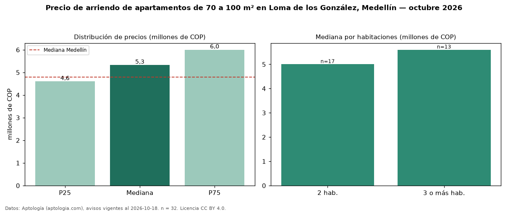

Precio de arriendo de apartamentos de 70 a 100 m² en Loma de los González, Medellín — octubre 2026
COP 5,33 millones al mes es el canon mediano de apartamentos de 70 a 100 m² en arriendo en Loma de los González, Medellín (n = 32 avisos). Eso es 15 % menos que la mediana de todos los apartamentos en arriendo de Loma de los González (COP 6,30 millones, n = 116); este segmento reúne el 28 % de esos avisos. Por metro cuadrado, la mediana es COP 62.500/m² al mes (n = 31), 4 % por encima del conjunto de referencia (COP 60.145/m²). El área mediana anunciada es 86 m². El segmento con más oferta es el de 2 habitaciones (17 avisos, mediana COP 5,00 millones); pasar de 2 habitaciones a 3 o más habitaciones cambia la mediana +12 %. El estrato más frecuente es 6 (75 % de los avisos con estrato). La mediana de todos los apartamentos en arriendo de Medellín es COP 4,80 millones (+11 % de diferencia). La mitad central de los avisos va de COP 4,60 millones a COP 6,00 millones (razón 1,3), una dispersión baja. Datos: Aptología (aptologia.com), CC BY 4.0 — https://www.aptologia.com/arriendo/medellin/loma-de-los-gonzalez. Archivos: PDF, CSV con las cifras y gráfica PNG.

| Avisos únicos | 32 |
|---|---|
| Percentil 25 | COP 4.600.000 |
| Mediana | COP 5.325.000 |
| Percentil 75 | COP 6.000.000 |
| Mediana por m² | COP 62.500 |
Fuente: avisos vigentes de portales inmobiliarios recopilados por Aptología, deduplicados (mínimo 30 avisos únicos por celda). Precios pedidos, no cerrados. Fecha: 2026-10-18.